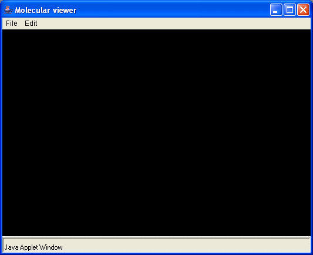
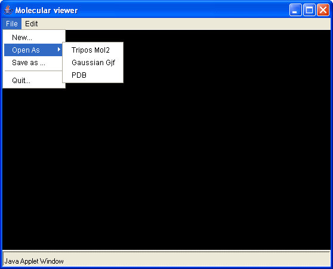
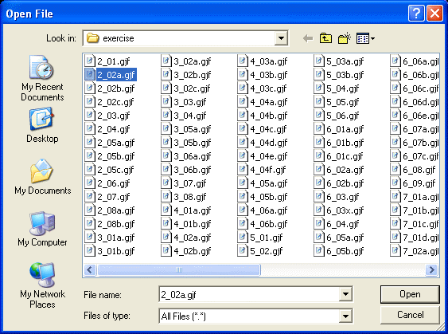
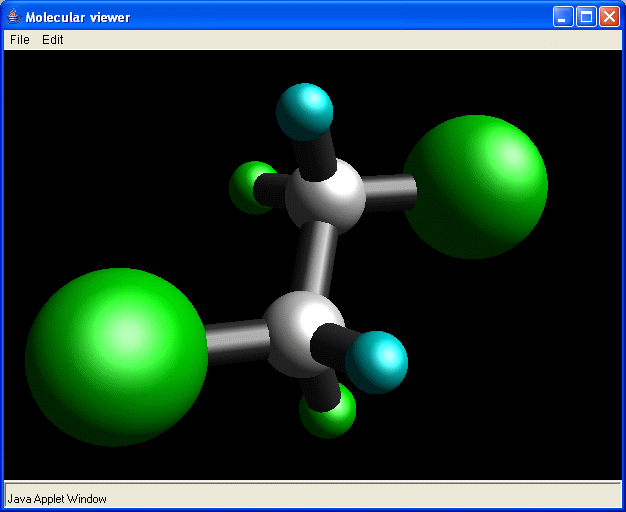

This site reflects a progress in developing a Java Molecular Viewer which will provide an interface between a user and Chemistry Grid.
 Interaction with Chemistry Database
Interaction with Chemistry Database
 Builder can now parse Gaussian output files.
Builder can now parse Gaussian output files.
 Selection, Add Atoms and Delete Atoms Dialogs are added
Selection, Add Atoms and Delete Atoms Dialogs are added
Slide show of internal ANUSF presentation is here.
Before starting a viewer
It's possible to use a Molecular builder either like a standalone program or like an applet in web browser.
Molecular Viewer is a Java Applet and by default it is not permitted to read/write from the local hard drive. To allow an applet to access your hard drive you need under the MS Windows
grant codeBase "http://anusf.anu.edu.au/~vvv900/-" {
permission java.io.FilePermission "X:\\Data\\-", "read,write";
};
The above means that an applet originated from the URL http://anusf.anu.edu.au/~vvv900 is entitled to the permission to read/write to a file residing in X:\Data\ or any subdirectory of X:\Data\ (which is the meaning of the hyphen). In this example, the local file system is a MS Windows one. The path name must be written with double backslashes ("\\") to mean a single backslash (the first backslash is an escape character).
Now you can start a viewer.
If everything is fine you shall see a new window:

The Molecular Builder commands are grouped in several main functional categories listed in the menubar across the top of the screen
Please, keep in mind that viewer is at the development stage, so not all menu items will work. To load a new molecule use "File" -> "Open As" menu item:

Now viewer can read files only in the Tripos mol2 and Gaussian gjf formats.
Invoking an "Open File" dialog

you can select a file and click "Open" button. A viewer will parse a file and show a molecule

All manipulations with molecular structures are accomplished by pressing mouse button and then moving the mouse. It is strongly advisable to use a three button mouse.
Hold down the left mouse button and then move the mouse
Hold down the right mouse button and then move the mouse
Hold down the middle mouse button and then move the mouse
Send all questions and comments to Vlad (vvv900@sf.anu.edu.au)
Best wishes,
Dr. Vladislav Vasilyev
Supercomputer Facility, ANU,
Canberra